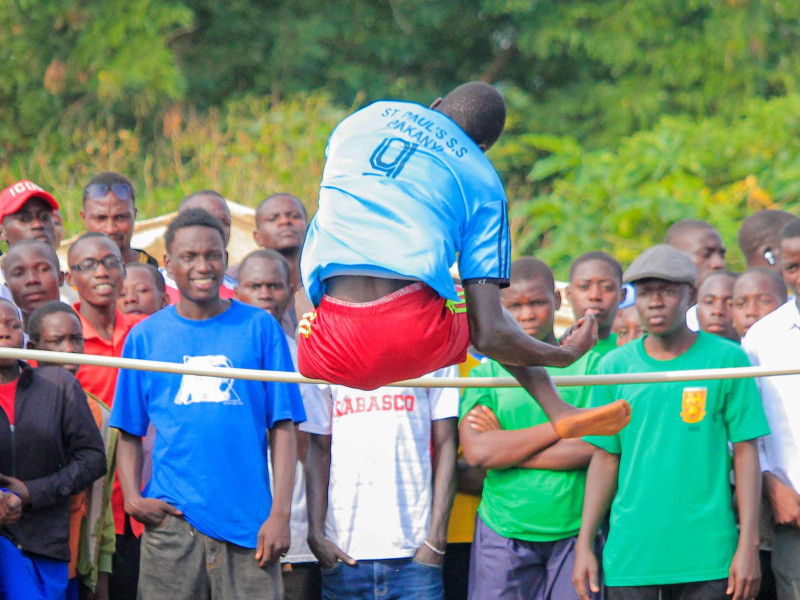
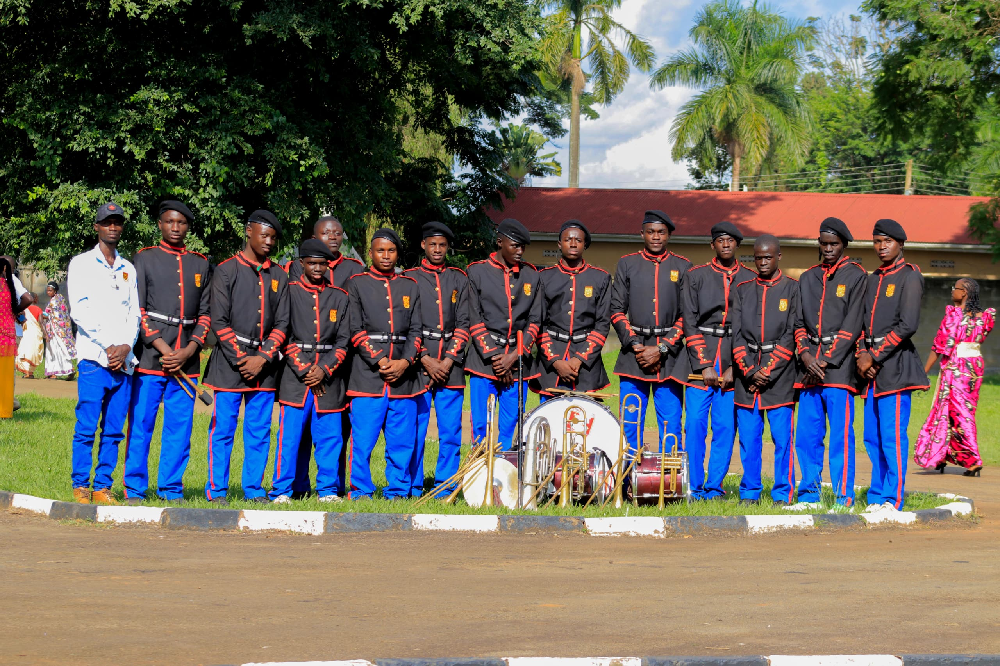

About Kabalega Secondary School
Our History
Kabalega Secondary School is one of Uganda’s leading government-aided secondary schools, renowned for academic excellence, discipline, and leadership development. The school was established to provide quality education to students across Uganda, especially within the Bunyoro region.
Location
The school is located along Masindi–Kigumba Road in Masindi District, Western Uganda. The serene and secure environment provides a perfect atmosphere for learning and character development.
Mission
To provide holistic education that nurtures academic excellence, moral integrity, leadership skills, and innovation among learners.
Vision
To be a nationally and internationally recognized center of academic excellence, producing responsible and competent global citizens.
Our Core Values
Integrity
We uphold honesty, transparency, and strong moral principles.
Discipline
We maintain high standards of behavior and responsibility.
Hard Work
We encourage dedication, persistence, and commitment to excellence.
Teamwork
We promote cooperation, unity, and mutual respect.
Excellence
We strive for outstanding academic and co-curricular performance.
Respect
We value dignity, diversity, and positive relationships.
Our Facilities
Modern Science Laboratories
Fully equipped Physics, Chemistry and Biology labs to support practical learning.
ICT Laboratory
Modern computer lab with internet access to enhance digital literacy.
Library
A well-stocked library with academic and reference materials.
Sports Facilities
Large playgrounds supporting football, athletics, volleyball and other sports.
School Leadership
Headteacher
Dedicated to maintaining high academic standards and discipline.
Deputy Headteacher
Oversees academic programs and student welfare.
Bursar
Ensures smooth financial and administrative management.
School Gallery


Join Kabalega Secondary School
Be part of a community committed to excellence and leadership.
Apply Now